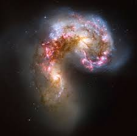

Son galaxias en las que se están formando enormes cantidades de estrellas, muchas de las cuales, al morir, explotan produciendo supernova, pese a que este fenómeno forma parte de la evolución estelar y formalmente este grupo no estaría en nuestra clasificación. Esta formación anormalmente alta de estrellas podría estar ligado a mecanismos internos del núcleo de la galaxia.
